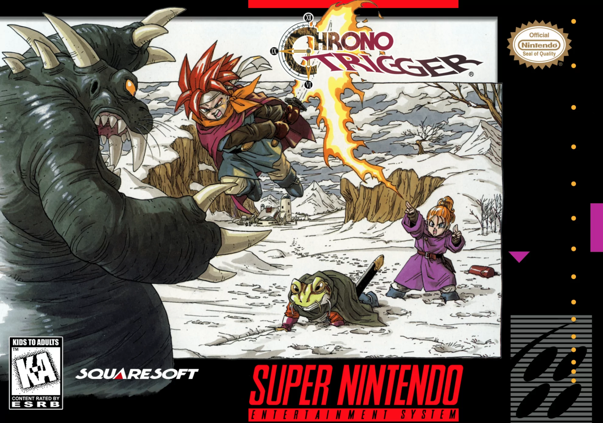
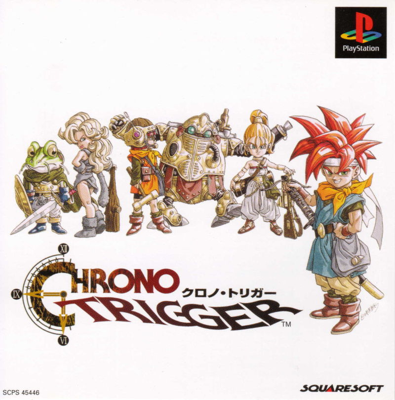
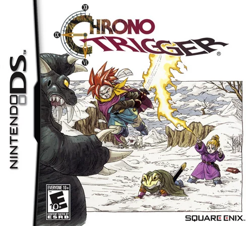

What's this about Chrono Trigger?
Chrono Trigger is my all time favorite video game. Originally released in 1995 for the SNES, this is one of the most influential video games of all time. It features an intricate story about time travel and saving the world!
Chrono Trigger Media
On this page, listen to some music from the game and view the special cutscenes that were added with the Playstation One release!
 Listen Here!Chrono Trigger Blog
Keep up with my wife and I as I guide her through her first playing experience!
 Keep Up!